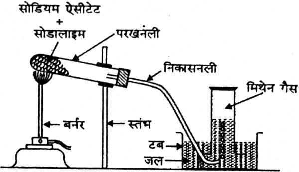
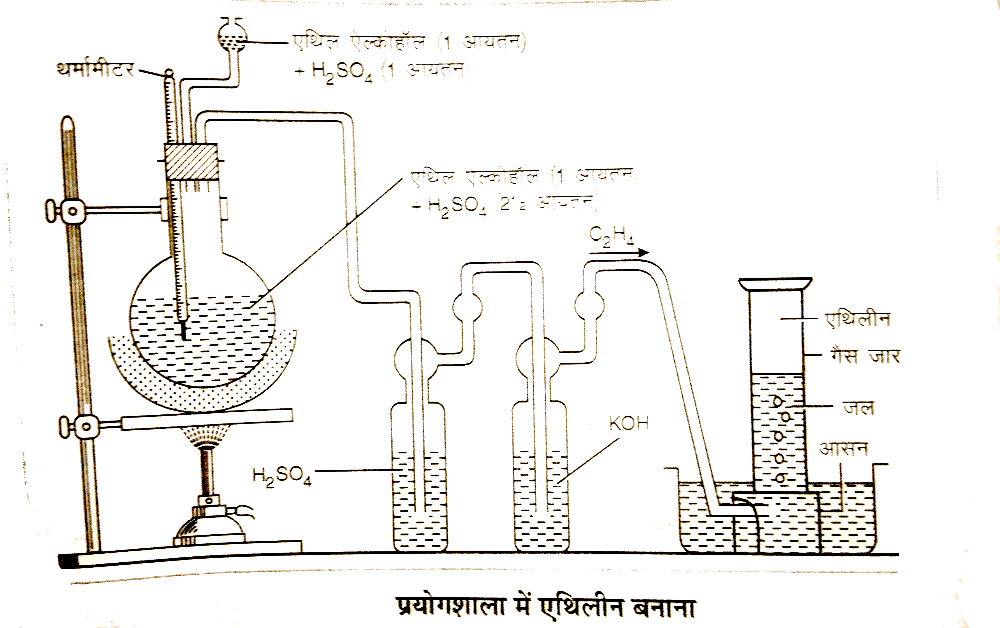
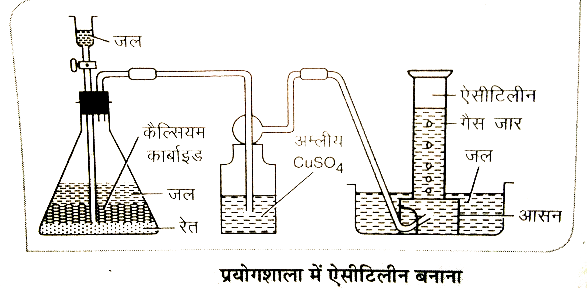

हाइड्रोकार्बन - कार्बन तथा हाइड्रोजन से बने यौगिकों को हाइड्रोकार्बन कहते हैं।
हाइड्रोकार्बन मुख्य रूप से दो प्रकार के होते हैं -
1. विवृत श्रृंखला या ऐलिफैटिक हाइड्रोकार्बन - इनमें कार्बन की खुली श्रृंखला होती है। ये पुनः निम्न प्रकार के होते हैं -
(i) संतृप्त हाइड्रोकार्बन या ऐल्केन - इनमें कार्बन-कार्बन के मध्य एकल बंध होता है। जैसे एल्केन।
इनका सामान्य सूत्र $ C_nH_{2n+2} $ होता है। जैसे-
$ CH_4 $ - मेथेन
$ C_2H_6 $ - एथेन
(ii) असंतृप्त हाइड्रोकार्बन - इनमें कार्बन-कार्बन के मध्य बहुबंध होता है। ये दो प्रकार के होते हैं।
ऐल्कीन का सामान्य सूत्र $ C_nH_{2n} $ होता है। जैसे-
$ C_2H_4 $ - एथिलीन
$ C_3H_6 $ - प्रोपिलीन
ऐल्काइन का सामान्य सूत्र $ C_nH_{2n-2} $ होता है। जैसे-
$ C_2H_2 $ - ऐसीटिलीन
$ C_3H_4 $ - प्रोपाइन
2. संवृत श्रृंखला या चक्रीय हाइड्रोकार्बन - इनमें कार्बन की बंद श्रृंखला होती है। ये पुनः दो प्रकार के होते हैं -
(i) ऐलिसाइक्लिक हाइड्रोकार्बन -
$ C_3H_6 $ - साइक्लोप्रोपेन
$ C_6H_{12} $ - साइक्लोहेक्सेन
(ii) ऐरोमैटिक हाइड्रोकार्बन - बेन्जीन तथा उसके व्युत्पन्नों को ऐरोमैटिक हाइड्रोकार्बन कहते हैं।
$ C_6H_6 $ - बेन्जीन
$ C_6H_5CH_3 $ - टॉलूईन
ऐल्केन - कार्बन-कार्बन के मध्य एकल बंध वाले संतृप्त विवृत श्रृंखला हाइड्रोकार्बनों को ऐल्केन कहते हैं। इन्हें पैराफिन भी कहते हैं।
इनका सामान्य सूत्र $ C_nH_{2n+2} $ होता है। जहाँ n कार्बन परमाणुओं की संख्या है।
ऐल्केन में सभी कार्बन परमाणु $ sp^3 $ संकरित होते हैं तथा इनमें सिग्मा बंध होता है।
उदाहरण -
$ CH_4 $ - मेथेन
$ C_2H_6 $ - एथेन
$ C_3H_8 $ - प्रोपेन
$ C_4H_{10} $ - ब्यूटेन
गुण -
1. ये संतृप्त हाइड्रोकार्बन होते हैं।
2. ये प्रतिस्थापन अभिक्रिया देते हैं।
3. इनका बंध कोण $ 109^\circ 28' $ होता है।
ऐल्केन की सजातीय श्रेणी -
ऐल्केनों का सामान्य सूत्र $ C_nH_{2n+2} $ होता है। इनकी सजातीय श्रेणी निम्न है -
$ CH_4 $ - मेथेन
$ C_2H_6 $ - एथेन
$ C_3H_8 $ - प्रोपेन
$ C_4H_{10} $ - ब्यूटेन
$ C_5H_{12} $ - पेन्टेन
$ C_6H_{14} $ - हेक्सेन
$ C_7H_{16} $ - हेप्टेन
$ C_8H_{18} $ - ऑक्टेन
$ C_9H_{20} $ - नोनेन
$ C_{10}H_{22} $ - डेकेन
ऐल्केन बनाने की सामान्य विधियाँ -
1. असंतृप्त हाइड्रोकार्बन से - जब ऐल्कीन या ऐल्काइन को निकिल उत्प्रेरक की उपस्थिति में 540K पर हाइड्रोजन के साथ गर्म किया जाता है तो ऐल्केन बनता है। इस क्रिया को उत्प्रेरकीय हाइड्रोजनीकरण कहते हैं।
$ CH_2=CH_2 + H_2 \xrightarrow{Ni/540K} CH_3-CH_3 $
एथिलीन
एथेन
$ CH \equiv CH + 2H_2 \xrightarrow{Ni/540K} CH_3-CH_3 $
ऐसीटिलीन
एथेन
2. ऐल्किल हैलाइड के अपचयन से - ऐल्किल ब्रोमाइड या आयोडाइड का लाल फास्फोरस और HI के साथ अपचयन करने पर ऐल्केन बनता है।
$ C_2H_5Br + 2HI \xrightarrow{Red P} C_2H_6 + HBr + I_2 $
एथिल ब्रोमाइड
एथेन
3. वुर्ट्ज अभिक्रिया द्वारा - शुष्क ईथर की उपस्थिति में किसी भी ऐल्किल हैलाइड की सोडियम धातु से क्रिया कराने पर दो ऐल्किल मूलक आपस में जुड़कर ऐल्केन बनाते हैं। यह विधि सममित ऐल्केन बनाने के लिए उपयोगी है।
$ 2CH_3I + 2Na \xrightarrow{Ether} C_2H_6 + 2NaI $
मेथिल आयोडाइड
एथेन
4. विकार्बोक्सिलीकरण द्वारा - कार्बोक्सिलिक अम्ल के सोडियम लवण को सोडालाइम (NaOH + CaO) के साथ गर्म करने पर ऐल्केन बनता है। इससे मेथेन प्रयोगशाला में बनाई जाती है। CaO नमी को सोखने का काम करता है।
$ CH_3COONa + NaOH \xrightarrow{CaO} CH_4 + Na_2CO_3 $
सोडियम ऐसीटेट
मेथेन
5. कोल्बे विद्युत अपघटन विधि - कार्बोक्सिलिक अम्ल के सोडियम लवण के जलीय विलयन का विद्युत अपघटन करने पर एनोड पर ऐल्केन प्राप्त होता है और कैथोड पर हाइड्रोजन गैस निकलती है।
$ 2CH_3COONa + 2H_2O \xrightarrow{Electrolysis} C_2H_6 + 2CO_2 + 2NaOH + H_2 $
सोडियम ऐसीटेट
एथेन
6. कार्बोक्सिलिक अम्ल के अपचयन से - कार्बोक्सिलिक अम्ल को लाल फास्फोरस और HI के साथ गर्म करने पर
$ CH_3COOH + 6HI \xrightarrow{Red P} C_2H_6 + 3I_2 + 2H_2O $
ऐसीटिक अम्ल
एथेन
7. ग्रिगनार्ड अभिकर्मक द्वारा - ग्रिगनार्ड अभिकर्मक की जल से क्रिया कराने पर ऐल्केन बनता है।
$ C_2H_5MgBr + H_2O \rightarrow C_2H_6 + Mg(OH)Br $
एथिल मैग्नीशियम ब्रोमाइड
एथेन
प्रयोगशाला में मेथेन बनाना -
सिद्धांत - मेथिल आयोडाइड का Zn/Cu युग्म द्वारा प्राप्त नवजात हाइड्रोजन से अपचयन करने पर मेथेन बनती है।
समीकरण -
$ CH_3I + 2[H] \xrightarrow{Zn/Cu + C_2H_5OH} CH_4 + HI $
मेथिल आयोडाइड
मेथेन
रेखाचित्र -

विधि - एक शंक्वाकार फ्लास्क में Zn/Cu युग्म लिया जाता है। बिन्दु-कीप से मेथिल आयोडाइड और मेथेनॉल का मिश्रण डाला जाता है। बनने वाली मेथेन गैस को जल के अधोमुखी विस्थापन द्वारा एकत्र किया जाता है।
उपयोग -
(i) ईंधन के रूप में।
(ii) कार्बन ब्लैक बनाने में।
(iii) हाइड्रोजन और क्लोरोफॉर्म बनाने में।
प्रयोगशाला में एथेन बनाना -
सिद्धांत - सोडियम प्रोपियोनेट को सोडालाइम (NaOH + CaO) के साथ गर्म करने पर विकार्बोक्सिलीकरण द्वारा एथेन बनती है।
समीकरण -
$ C_2H_5COONa + NaOH \xrightarrow{CaO, \Delta} C_2H_6 + Na_2CO_3 $
सोडियम प्रोपियोनेट
एथेन
रेखाचित्र -
विधि - सोडियम प्रोपियोनेट और सोडालाइम के मिश्रण को एक कठोर काँच की नली में लिया जाता है। नली के मुँह पर निकास नली लगी होती है जो जल से भरी नांद में रखी छिद्रित प्लेट के छेद से जुड़ी होती है। नली को गर्म करने पर एथेन गैस बनती है जिसे जल के अधोमुखी विस्थापन द्वारा गैस जार में एकत्र किया जाता है।
उपयोग -
(i) ईंधन के रूप में।
(ii) कृत्रिम कपूर बनाने में।
(iii) क्लोरोफॉर्म और अन्य हाइड्रोकार्बन बनाने में।
एल्केन के भौतिक गुण निम्न हैं :-
1. $ C_1 $ से $ C_4 $ तक गैस, $ C_5 $ से $ C_{17} $ तक द्रव तथा $ C_{18} $ से ऊपर के सभी सदस्य ठोस होते हैं।
2. ये जल में अविलेय परन्तु बेन्जीन, ईथर जैसे कार्बनिक विलायकों में विलेय होते हैं।
3. अणुभार बढ़ने पर क्वथनांक व घनत्व बढ़ता है, परन्तु शाखा बढ़ने पर क्वथनांक घटता है जैसे $ n\text{-}C_4H_{10} $ का क्वथनांक आइसो- $ C_4H_{10} $ से अधिक होता है।
4. ये अध्रुवीय, रंगहीन, गंधहीन होते हैं तथा इनका घनत्व जल से कम $ < 1 $ ग्राम/मिली होता है।
5. इनमें $ sp^3 $ संकरण होता है तथा $ C-C $ बंध कोण $ 109^\circ 28' $ होता है।
ऐल्केन के रासायनिक गुण -
1. प्रतिस्थापन अभिक्रिया - इसमें ऐल्केन के एक या अधिक हाइड्रोजन परमाणु किसी अन्य परमाणु या समूह द्वारा इस प्रकार हटाए जाते हैं कि कार्बन का ढाँचा वैसा ही बना रहता है।
(a) हैलोजनीकरण - ऐल्केन सूर्य के प्रकाश की उपस्थिति में क्लोरीन या ब्रोमीन के साथ की क्रिया करके हैलोऐल्केन बनता है।
$ CH_4 + Cl_2 \xrightarrow{h\nu} CH_3Cl + HCl $
मेथेन
मेथिल क्लोराइड
$ CH_3Cl + Cl_2 \xrightarrow{h\nu} CH_2Cl_2 + HCl $
मेथिल क्लोराइड
मेथिलीन क्लोराइड
$ CH_2Cl_2 + Cl_2 \xrightarrow{h\nu} CHCl_3 + HCl $
मेथिलीन क्लोराइड
क्लोरोफॉर्म
$ CHCl_3 + Cl_2 \xrightarrow{h\nu} CCl_4 + HCl $
क्लोरोफॉर्म
कार्बन टेट्राक्लोराइड
(b) नाइट्रीकरण - ऐल्केन उच्च ताप 450°C पर सांद्र नाइट्रिक अम्ल के साथ क्रिया करके नाइट्रोऐल्केन बनाता है। n-ब्यूटेन से 1-नाइट्रोब्यूटेन और 2-नाइट्रोब्यूटेन का मिश्रण मिलता है।
$ CH_3-CH_2-CH_2-CH_3 + HNO_3 \xrightarrow{450^\circ C} CH_3-CH_2-CH_2-CH_2NO_2 + CH_3-CH(NO_2)-CH_2-CH_3 + H_2O $
n-ब्यूटेन
1-नाइट्रोब्यूटेन + 2-नाइट्रोब्यूटेन
(c) सल्फोनीकरण - आइसोब्यूटेन जैसे उच्च ऐल्केन की सांद्र सल्फ्यूरिक अम्ल के साथ क्रिया करके सल्फोनिक अम्ल बनाते हैं।
$ (CH_3)_3CH + H_2SO_4 \rightarrow (CH_3)_3C-SO_3H + H_2O $
आइसोब्यूटेन
तृतीयक ब्यूटिल सल्फोनिक अम्ल
2. दहन अभिक्रिया - ऐल्केन वायु या ऑक्सीजन की अधिकता में नीली ज्वाला के साथ जलते हैं और कार्बन डाइऑक्साइड, जल तथा अत्यधिक ऊष्मा उत्पन्न करते हैं। इसी कारण ऐल्केन को ईंधन के रूप में उपयोग किया जाता है।
$ CH_4 + 2O_2 \rightarrow CO_2 + 2H_2O $
मेथेन
कार्बन डाइऑक्साइड
3. नियंत्रित ऑक्सीकरण - यदि मेथेन को वायु और उत्प्रेरक के साथ नियंत्रित परिस्थितियों में गर्म किया जाए तो क्रमशः मेथिल ऐल्कोहॉल, फॉर्मेल्डिहाइड और फॉर्मिक अम्ल बनता है।
$ CH_4 \xrightarrow{[O]} CH_3OH \xrightarrow{[O]} HCHO \xrightarrow{[O]} HCOOH $
मेथेन
मेथेनॉल
फॉर्मेल्डिहाइड
फॉर्मिक अम्ल
4. भंजन या क्रैकिंग - जब उच्च ऐल्केन को उच्च ताप पर गर्म किया जाता है तो बड़े अणु टूटकर छोटे ऐल्केन और ऐल्कीन में बदल जाते हैं। इसे भंजन कहते है। इसका उपयोग भारी तेलों से पेट्रोल बनाने में होता है।
$ C_6H_{14} \xrightarrow{High Temp} C_2H_6 + C_4H_8 $
हेक्सेन
एथेन
ब्यूटीन
5. एरोमैटीकरण - जब 6 या अधिक कार्बन वाले सीधी श्रृंखला के ऐल्केन को 500°C पर क्रोमियम ऑक्साइड उत्प्रेरक पर गर्म किया जाता है तो बेन्जीन जैसे एरोमैटिक हाइड्रोकार्बन बनते है। इसे एरोमैटीकरण कहते है।
$ C_6H_{14} \xrightarrow{Cr_2O_3, 500^\circ C} C_6H_6 + 4H_2 $
n-हेक्सेन
बेन्जीन
6. समावयवीकरण - जब सीधी श्रृंखला वाले उच्च एल्केन को निर्जल AlCl_3 और HCl के साथ 300°C पर गर्म किया जाता है तो ये शाखा वाले समावयवी ऐल्केन में बदल जाते हैं। इसे समावयवीकरण कहते है।
$ CH_3-CH_2-CH_2-CH_3 \xrightarrow{AlCl_3/HCl} CH_3-\underset{\displaystyle CH_3}{\underset{\displaystyle |}{CH}}-CH_3 $
n-ब्यूटेन
आइसो-ब्यूटेन
एल्कीन - कार्बन-कार्बन के मध्य द्विबंध वाले असंतृप्त विवृत श्रृंखला हाइड्रोकार्बनों को एल्कीन कहते हैं। इन्हें ओलिफिन भी कहते हैं।
इनका सामान्य सूत्र $ C_nH_{2n} $ होता है। जहाँ n कार्बन परमाणुओं की संख्या है।
एल्कीन में द्विबंध वाले कार्बन परमाणु $ sp^2 $ संकरित होते हैं तथा इनमें एक सिग्मा और एक पाई बंध होता है।
उदाहरण -
$ C_2H_4 $ - एथिलीन
$ C_3H_6 $ - प्रोपीन
$ C_4H_8 $ - ब्यूटीन
$ C_5H_{10} $ - पेन्टीन
गुण -
1. ये असंतृप्त हाइड्रोकार्बन होते हैं।
2. ये योगात्मक अभिक्रिया देते हैं।
3. इनका बंध कोण $ 120^\circ $ के लगभग होता है।
एल्कीन की सजातीय श्रेणी -
एल्कीनों का सामान्य सूत्र $ C_nH_{2n} $ होता है। इनकी सजातीय श्रेणी निम्न है -
$ C_2H_4 $ - एथीन (एथिलीन)
$ C_3H_6 $ - प्रोपीन
$ C_4H_8 $ - ब्यूटीन
$ C_5H_{10} $ - पेन्टीन
$ C_6H_{12} $ - हेक्सीन
$ C_7H_{14} $ - हेप्टीन
$ C_8H_{16} $ - ऑक्टीन
$ C_9H_{18} $ - नोनीन
$ C_{10}H_{20} $ - डेसीन
एल्कीन बनाने की सामान्य विधियाँ -
1. ऐल्कोहॉल के निर्जलीकरण से - ऐल्कोहॉल को सांद्र $ H_2SO_4 $ के साथ $ 170^\circ C $ पर गर्म करने पर एल्कीन बनती है।
$ C_2H_5OH \xrightarrow{Conc. H_2SO_4, 170^\circ C} CH_2=CH_2 + H_2O $
एथिल ऐल्कोहॉल
एथीन
2. ऐल्किल हैलाइड के विहाइड्रोहैलोजनीकरण से - ऐल्किल हैलाइड को ऐल्कोहॉली KOH के साथ गर्म करने पर HX निकलता है और एल्कीन बनती है।
$ C_2H_5Br + KOH(alc.) \rightarrow CH_2=CH_2 + KBr + H_2O $
एथिल ब्रोमाइड
एथीन
3. डाइहैलाइड के विहैलोजनीकरण से - निकटवर्ती डाइहैलाइड (Vicinal dihalide) को जिंक चूर्ण के साथ गर्म करने पर एल्कीन बनती है।
$ CH_2Br-CH_2Br + Zn \rightarrow CH_2=CH_2 + ZnBr_2 $
एथिलीन डाइब्रोमाइड
एथीन
4. एल्काइन के आंशिक हाइड्रोजनीकरण से - एल्काइन को पॉइजन्ड उत्प्रेरक (लिंडलार उत्प्रेरक) की उपस्थिति में हाइड्रोजन के साथ क्रिया कराने पर एल्कीन बनती है।
$ CH \equiv CH + H_2 \xrightarrow{Pd/BaSO_4} CH_2=CH_2 $
ऐसिटिलीन
एथीन
5. कोल्बे विद्युत अपघटन विधि द्वारा - डाइकार्बोक्सिलिक अम्ल के पोटैशियम लवण के जलीय विलयन का विद्युत अपघटन करने पर एनोड पर एल्कीन बनती है।
$ CH_2(COOK)-CH_2(COOK) \xrightarrow{Electrolysis} CH_2=CH_2 + 2CO_2 + 2KOH + H_2 $
पोटैशियम सक्सीनेट
एथीन
प्रयोगशाला में एथिलीन बनाना -
सिद्धांत - एथिल ऐल्कोहॉल को सांद्र सल्फ्यूरिक अम्ल के साथ $ 170^\circ C $ पर गर्म करने पर निर्जलीकरण द्वारा एथिलीन बनती है।
समीकरण -
$ C_2H_5OH \xrightarrow{Conc.\ H_2SO_4, 170^\circ C} C_2H_4 + H_2O $
एथिल ऐल्कोहॉल
एथिलीन
रेखाचित्र -

विधि - एक गोल पेंदी के फ्लास्क में एथिल ऐल्कोहॉल और सांद्र $ H_2SO_4 $ का मिश्रण लेकर उसमें थोड़ा बालू मिलाते हैं। फ्लास्क को $ 170^\circ C $ पर गर्म करने पर एथिलीन गैस बनती है। गैस को पहले NaOH विलयन से प्रवाहित करके $ CO_2 $ और $ SO_2 $ की अशुद्धि दूर की जाती है फिर इसे जल के अधोमुखी विस्थापन द्वारा गैस जार में एकत्र किया जाता है।
उपयोग -
(i) फलों को कृत्रिम रूप से पकाने में।
(ii) पॉलीथीन तथा अन्य यौगिक बनाने में।
(iii) निश्चेतक के रूप में।
एल्कीन के भौतिक गुण निम्न हैं :-
1. प्रथम तीन सदस्य एथिलीन, प्रोपिलीन, ब्यूटिलीन रंगहीन गैस हैं, अगले चौदह सदस्य द्रव तथा उच्च सदस्य ठोस होते हैं।
2. ये गंधहीन होते हैं परन्तु उच्च सदस्य में पेट्रोल जैसी गंध आती है।
3. ये जल में अल्प विलेय हैं परन्तु बेंजीन, ईथर, क्लोरोफॉर्म जैसे कार्बनिक विलायकों में पूर्ण विलेय हैं।
4. इनका घनत्व जल से कम होता है तथा अणुभार बढ़ने पर घनत्व बढ़ता है।
5. अणुभार बढ़ने के साथ क्वथनांक और गलनांक में क्रमिक वृद्धि होती है।
6. ये वायु से हल्के होते हैं और निश्चेतक (Anaesthetic) गुण रखते हैं।
एल्कीन के रासायनिक गुण - एल्कीन में द्विबंध होने के कारण ये बहुत क्रियाशील होते हैं और मुख्यतः योगात्मक अभिक्रियाएँ देते हैं।
1. योगात्मक अभिक्रिया - इस अभिक्रिया में अभिकारक के दो परमाणु द्विबंध के दोनों कार्बन पर जुड़ जाते हैं और द्विबंध एकल बंध में बदल जाता है।
(I) हाइड्रोजन का योग - Ni उत्प्रेरक की उपस्थिति में $ 200^\circ C $ पर हाइड्रोजन जुड़ने से एल्केन बनता है। इसे उत्प्रेरकीय हाइड्रोजनीकरण कहते हैं।
$ CH_2=CH_2 + H_2 \xrightarrow{Ni, 200^\circ C} CH_3-CH_3 $
एथिलीन
एथेन
(II) हैलोजन का योग - क्लोरीन या ब्रोमीन जुड़कर डाइहैलाइड बनाता है। ब्रोमीन जल का रंग उड़ना एल्कीन का परीक्षण है।
$ CH_2=CH_2 + Cl_2 \rightarrow CH_2Cl-CH_2Cl $
एथिलीन
एथिलीन डाइक्लोराइड
(III) हाइड्रोजन हैलाइड का योग - HBr, HCl जुड़कर एल्किल हैलाइड बनाते हैं।
$ CH_2=CH_2 + HBr \rightarrow CH_3-CH_2Br $
एथिलीन
एथिल ब्रोमाइड
(IV) मार्कोनीकॉफ का नियम - असममित एल्कीन जैसे प्रोपीन में योग होने पर ऋणात्मक भाग उस कार्बन पर जुड़ता है जिस पर हाइड्रोजन की संख्या कम हो।
$ CH_3-CH=CH_2 + H-Br \rightarrow CH_3-CH(Br)-CH_3 $
प्रोपीन
2-ब्रोमो प्रोपेन
(V) एण्टी-मार्कोनीकॉफ नियम (परॉक्साइड प्रभाव / खराश प्रभाव) - बेन्जॉयल परॉक्साइड की उपस्थिति में HBr का योग नियम के विपरीत होता है, अर्थात ऋणात्मक भाग उस कार्बन पर जुड़ता है जहाँ हाइड्रोजन अधिक हो। यह प्रभाव केवल HBr के साथ होता है।
$ CH_3-CH=CH_2 + H-Br \xrightarrow{Benzoyl Peroxide} CH_3-CH_2-CH_2-Br $
प्रोपीन
1-ब्रोमो प्रोपेन
(VI) हाइपोक्लोरस अम्ल (HOCl) का योग - क्लोरीन जल से क्रिया करके क्लोरोहाइड्रिन बनता है।
$ CH_2=CH_2 + HOCl \rightarrow CH_2(OH)-CH_2Cl $
एथिलीन
एथिलीन क्लोरोहाइड्रिन
(VII) जल का योग (जलयोजन) - तनु अम्ल की उपस्थिति में जल जुड़ने से एल्कोहॉल बनता है।
$ CH_2=CH_2 + H_2O \xrightarrow{H^+} CH_3CH_2OH $
एथिलीन
एथिल एल्कोहॉल
(VIII) सल्फर मोनोक्लोराइड का योग - इससे युद्ध गैस मस्टर्ड गैस बनती है।
$ 2CH_2=CH_2 + S_2Cl_2 \rightarrow (CH_2Cl-CH_2)_2S $
डाइक्लोरो डाइएथिल सल्फाइड (मस्टर्ड गैस)
(IX) ऑक्सीजन का योग - सिल्वर उत्प्रेरक पर $ 200^\circ C $ पर ऑक्सीजन से एथिलीन ऑक्साइड (एपॉक्साइड) बनता है।
$ CH_2=CH_2 + \frac{1}{2}O_2 \xrightarrow{Ag, 200^\circ C} \underset{\underset{CH_2}{CH_2}}{O} $
एथिलीन ऑक्साइड
(X) ओजोन का योग (ओजोनीकरण) - ओजोन जुड़कर ओजोनाइड बनाता है, जिसके जल-अपघटन से एल्डिहाइड बनता है। यह द्विबंध की स्थिति ज्ञात करने में उपयोगी है।
$ CH_2=CH_2 + O_3 \rightarrow CH_2-O-CH_2-O $ (एथिलीन ओजोनाइड)
(XI) सल्फ्यूरिक अम्ल का योग - सांद्र $ H_2SO_4 $ से एथिल हाइड्रोजन सल्फेट बनता है, जिसे पानी में उबालने पर एल्कोहॉल मिलता है। यह एल्कोहॉल बनाने की औद्योगिक विधि है।
$ CH_2=CH_2 + H_2SO_4 \rightarrow CH_3CH_2OSO_3H $
$ CH_3CH_2OSO_3H + H_2O \rightarrow C_2H_5OH + H_2SO_4 $
(XII) नाइट्रिक अम्ल का योग - इसमें नाइट्रो एल्कोहॉल बनता है।
$ CH_2=CH_2 + HO-NO_2 \rightarrow CH_2(OH)-CH_2(NO_2) $
2-नाइट्रो एथेनॉल
2. ऑक्सीकरण -
(I) बेयर अभिकर्मक द्वारा - $ 1\% $ क्षारीय $ KMnO_4 $ को बेयर अभिकर्मक कहते हैं। इससे ग्लाइकॉल बनता है और गुलाबी रंग उड़ जाता है, यह द्विबंध की पहचान है।
$ CH_2=CH_2 + H_2O + [O] \xrightarrow{Alk. KMnO_4} CH_2OH-CH_2OH $
एथिलीन
एथिलीन ग्लाइकॉल
(II) प्रबल ऑक्सीकरण द्वारा - अम्लीय या गर्म क्षारीय $ KMnO_4 $ द्वारा ऑक्सीकरण से फॉर्मिक अम्ल बनता है जो आगे $ CO_2 $ में टूट जाता है।
$ CH_2=CH_2 + 4[O] \xrightarrow{Hot KMnO_4} 2HCOOH \rightarrow 2CO_2 + 2H_2O $
3. दहन (Combustion) - एल्कीन वायु या ऑक्सीजन में धुएँदार चमकदार ज्वाला के साथ जलते हैं तथा कार्बन डाइऑक्साइड और जल वाष्प बनाते हैं। इस क्रिया में अत्यधिक ऊष्मा निकलती है।
$ CH_2=CH_2 + 3O_2 \rightarrow 2CO_2 + 2H_2O + Heat $
एथिलीन
कार्बन डाइऑक्साइड + जल
4. बहुलीकरण (Polymerization) - जब उच्च दाब, ताप तथा उत्प्रेरक (Zeigler-Natta उत्प्रेरक $ TiCl_4 + (C_2H_5)_3Al $) की उपस्थिति में एथिलीन के बहुत से अणु आपस में जुड़कर पॉलीथीन का एक बड़ा अणु बनाते हैं, तो इस क्रिया को बहुलीकरण कहते हैं।
$ nCH_2=CH_2 \xrightarrow[High Pressure]{TiCl_4 + (C_2H_5)_3Al} [-CH_2-CH_2-]_n $
एथिलीन (मोनोमर)
पॉलीथीन (पॉलीमर)
5. समावयवीकरण (Isomerization) - वह अभिक्रिया जिसमें गर्म करने पर एल्कीन अणु में द्विबंध की स्थिति बदल जाती है या सीधी श्रृंखला शाखायुक्त श्रृंखला में बदल जाती है, उसे समावयवीकरण कहते हैं। यह अभिक्रिया $ Al_2O_3 $ उत्प्रेरक की उपस्थिति में $ 500^\circ C $ पर होती है।
$ CH_3-CH_2-CH=CH_2 \xrightarrow[500^\circ C]{Al_2O_3} \begin{matrix} CH_3 \\ | \\ CH_3-C=CH_2 \end{matrix} $
ब्यूटीन-1 (n-ब्यूटीन)
आइसो-ब्यूटीन (2-मेथिल प्रोपीन)
$ CH_3-CH_2-CH_2-CH_2-CH=CH_2 \xrightarrow[500^\circ C]{Al_2O_3} CH_3-CH_2-CH_2-CH=CH-CH_3 $
हेक्सीन-1
हेक्सीन-2
एल्काइन - कार्बन-कार्बन के मध्य त्रिबंध वाले असंतृप्त विवृत श्रृंखला हाइड्रोकार्बनों को एल्काइन कहते हैं। इन्हें ऐसीटिलीन श्रेणी भी कहते हैं।
इनका सामान्य सूत्र $ C_nH_{2n-2} $ होता है। जहाँ n कार्बन परमाणुओं की संख्या है।
एल्काइन में त्रिबंध वाले कार्बन परमाणु $ sp $ संकरित होते हैं तथा इनमें एक सिग्मा और दो पाई बंध होते हैं।
उदाहरण -
$ C_2H_2 $ - ऐसीटिलीन (एथाइन)
$ C_3H_4 $ - प्रोपाइन
$ C_4H_6 $ - ब्यूटाइन
$ C_5H_8 $ - पेन्टाइन
गुण -
1. ये असंतृप्त हाइड्रोकार्बन होते हैं।
2. ये योगात्मक अभिक्रिया देते हैं, इनमें दो अणु तक जुड़ सकते हैं।
3. इनके सिरे पर अम्लीय हाइड्रोजन होता है जो धातुओं से प्रतिस्थापित हो जाता है।
4. इनका बंध कोण $ 180^\circ $ होता है तथा आकृति रेखीय होती है।
एल्काइन की सजातीय श्रेणी (10 सदस्यों तक) निम्न है -
$ C_2H_2 $ - एथाइन
$ C_3H_4 $ - प्रोपाइन
$ C_4H_6 $ - ब्यूटाइन
$ C_5H_8 $ - पेंटाइन
$ C_6H_{10} $ - हेक्साइन
$ C_7H_{12} $ - हेप्टाइन
$ C_8H_{14} $ - ऑक्टाइन
$ C_9H_{16} $ - नॉनाइन
$ C_{10}H_{18} $ - डेकाइन
$ C_{11}H_{20} $ - अंडेकाइन
एल्काइन बनाने की सामान्य विधियाँ -
1. डाइहैलाइड के विहाइड्रोहैलोजनीकरण से - जब टेट्राब्रोमोएल्केन या विसिनल डाइहैलाइड को ऐल्कोहॉली KOH के साथ गर्म किया जाता है तो एल्काइन बनती है।
$ CH_2Br-CH_2Br + 2KOH(alc.) \rightarrow CH \equiv CH + 2KBr + 2H_2O $
एथिलीन डाइब्रोमाइड
ऐसीटिलीन
$ CH_3-CHBr_2 + 2KOH(alc.) \rightarrow CH \equiv CH + 2KBr + 2H_2O + CH_3 $ सुधार -
$ CH_3-CBr_2-CH_3 + 2KOH \rightarrow CH_3-C \equiv CH + 2KBr + 2H_2O $
2. कैल्शियम कार्बाइड से (प्रयोगशाला विधि) - कैल्शियम कार्बाइड पर जल की क्रिया से ऐसीटिलीन बनती है।
$ CaC_2 + 2H_2O \rightarrow CH \equiv CH + Ca(OH)_2 $
कैल्शियम कार्बाइड
ऐसीटिलीन
3. टेट्राहैलाइड के विहैलोजनीकरण से - टेट्राहैलो एल्केन को जिंक चूर्ण के साथ गर्म करने पर एल्काइन बनती है।
$ CHBr_2-CHBr_2 + 2Zn \rightarrow CH \equiv CH + 2ZnBr_2 $
1,1,2,2-टेट्राब्रोमो एथेन
ऐसीटिलीन
4. ग्रिगनार्ड अभिकर्मक द्वारा - ग्रिगनार्ड अभिकर्मक की क्रिया डाइहैलोमीथेन से कराने पर उच्च एल्काइन बनती है।
$ CH \equiv C-MgBr + Br-CH_2-Br \rightarrow CH \equiv C-CH_2-Br + MgBr_2 $
$ CH \equiv C-CH_2-Br + CH \equiv C-MgBr \rightarrow CH \equiv C-CH_2-C \equiv CH $
5. ऐसीटिलीन से उच्च एल्काइन बनाना - ऐसीटिलीन सोडामाइड से क्रिया करके सोडियम ऐसीटिलाइड बनाता है जो एल्किल हैलाइड से क्रिया करके उच्च एल्काइन बनाता है।
$ CH \equiv CH + NaNH_2 \rightarrow CH \equiv CNa + NH_3 $
$ CH \equiv CNa + CH_3I \rightarrow CH \equiv C-CH_3 + NaI $
सोडियम ऐसीटिलाइड
प्रोपाइन
एल्काइन के भौतिक गुण निम्न हैं :-
1. प्रथम तीन सदस्य एथाइन, प्रोपाइन, ब्यूटाइन रंगहीन गैस हैं, अगले आठ सदस्य द्रव तथा उच्च सदस्य ठोस होते हैं।
2. शुद्ध ऐसीटिलीन गंधहीन होती है परन्तु फॉस्फीन अशुद्धि के कारण लहसुन जैसी गंध आती है।
3. ये जल में अल्प विलेय हैं परन्तु बेंजीन, ऐसीटोन, एल्कोहॉल में पूर्ण विलेय हैं।
4. इनका घनत्व जल से कम होता है तथा अणुभार बढ़ने पर घनत्व बढ़ता है।
5. अणुभार बढ़ने के साथ क्वथनांक और गलनांक बढ़ते हैं।
6. ये स्वयं विषैले नहीं हैं परन्तु वायु की ऑक्सीजन कम कर देते हैं जिससे श्वास लेने में कठिनाई होती है।
प्रयोगशाला में एसिटिलीन बनाना -
सिद्धांत - कैल्शियम कार्बाइड की जल के साथ क्रिया करने पर एसिटिलीन गैस बनती है।
समीकरण -
$ CaC_2 + 2H_2O \rightarrow C_2H_2 + Ca(OH)_2 $
कैल्शियम कार्बाइड
एसिटिलीन
रेखाचित्र -

विधि - एक शंक्वाकार फ्लास्क में कैल्शियम कार्बाइड के छोटे-छोटे टुकड़े लिए जाते हैं। बिन्दु-कीप से बूंद-बूंद करके जल डाला जाता है। तीव्र क्रिया के साथ एसिटिलीन गैस बनती है जिसे पहले $ CuSO_4 $ विलयन में प्रवाहित कर $ H_2S $ और $ PH_3 $ की अशुद्धि दूर की जाती है, फिर जल के अधोमुखी विस्थापन द्वारा गैस जार में एकत्र किया जाता है।
उपयोग -
(i) धातुओं को काटने और जोड़ने में ऑक्सी-एसिटिलीन ज्वाला के रूप में।
(ii) प्रकाश उत्पन्न करने में कार्बाइड लैम्प में।
(iii) कृत्रिम रबर, PVC तथा अन्य कार्बनिक यौगिकों के निर्माण में।
एल्काइन के रासायनिक गुण - एल्काइन में त्रिबंध ($ -C \equiv C- $) होने के कारण ये अत्यधिक क्रियाशील होते हैं। मुख्य अभिक्रियाएँ निम्न हैं -
1. योगात्मक अभिक्रियाएँ - त्रिबंध के कारण इसमें दो अणु तक जुड़ सकते हैं।
a. हाइड्रोजन का योग - Ni उत्प्रेरक की उपस्थिति में $ 200^\circ C $ पर ऐसीटिलीन हाइड्रोजन से क्रिया करके पहले एथिलीन और फिर एथेन बनाती है।
$ CH \equiv CH + H_2 \xrightarrow[200^\circ C]{Ni} CH_2=CH_2 + H_2 \rightarrow CH_3-CH_3 $
ऐसीटिलीन एथिलीन एथेन
b. हैलोजन का योग - ऐसीटिलीन क्लोरीन से क्रिया करके पहले डाइक्लोरो एथिलीन और फिर टेट्राक्लोरो एथेन बनाती है।
$ CH \equiv CH + Cl_2 \rightarrow CHCl=CHCl + Cl_2 \rightarrow CHCl_2-CHCl_2 $
ऐसीटिलीन डाइक्लोरो एथिलीन टेट्राक्लोरो एथेन
c. हाइड्रोजन हैलाइड का योग - मार्कोनीकॉफ के नियमानुसार दो पदों में होता है।
$ CH \equiv CH + HCl \rightarrow CH_2=CHCl + HCl \rightarrow CH_3-CHCl_2 $
ऐसीटिलीन वाइनिल क्लोराइड एथिलिडीन डाइक्लोराइड
d. हाइपोक्लोरस अम्ल का योग - ऐसीटिलीन HOCl से क्रिया करके डाइक्लोरो ऐसीटैल्डिहाइड बनाती है।
$ CH \equiv CH + HOCl \rightarrow CH(OH)=CHCl + HOCl \rightarrow CH(OH)_2-CHCl_2 \xrightarrow{-H_2O} CHCl_2-CHO $
डाइक्लोरो ऐसीटैल्डिहाइड
e. ओजोन का योग - ओजोनाइड बनता है जो जल अपघटन पर ग्लायऑक्जल देता है।
$ CH \equiv CH + O_3 \rightarrow \text{ओजोनाइड} \xrightarrow{H_2O} CHO-CHO + H_2O_2 $
ऐसीटिलीन ग्लायऑक्जल
f. जल का योग - $ 42\% H_2SO_4 $ तथा $ 1\% HgSO_4 $ की उपस्थिति में $ 60^\circ C $ पर ऐसीटिलीन जल से क्रिया करके ऐसीटैल्डिहाइड बनाती है।
$ CH \equiv CH + H_2O \xrightarrow[60^\circ C]{42\% H_2SO_4 + 1\% HgSO_4} CH_3-CHO $
ऐसीटिलीन ऐसीटैल्डिहाइड
2. अम्लीय गुण - अमोनियामय सिल्वर नाइट्रेट के साथ सफेद अवक्षेप देता है।
$ CH \equiv CH + 2AgNO_3 + 2NH_4OH \rightarrow CAg \equiv CAg + 2NH_4NO_3 + 2H_2O $
ऐसीटिलीन सिल्वर ऐसीटिलाइड (सफेद अवक्षेप)
$ CH \equiv CH + Cu_2Cl_2 + 2NH_4OH \rightarrow CCu \equiv CCu + 2NH_4Cl + 2H_2O $
कॉपर ऐसीटिलाइड (लाल अवक्षेप)
2. ऑक्सीकरण - एल्काइन का ऑक्सीकरण ऑक्सीकारक की प्रकृति पर निर्भर करता है।
a) क्षारीय पोटैशियम परमैंगनेट से ऑक्सीकरण पर ऑक्जेलिक अम्ल बनता है।
$ CH \equiv CH + 4[O] \xrightarrow{क्षारीय KMnO_4} COOH-COOH $
ऐसीटिलीन
ऑक्जेलिक अम्ल
b) अम्लीय पोटैशियम परमैंगनेट से ऑक्सीकरण पर फॉर्मिक अम्ल बनता है।
$ CH \equiv CH + 3[O] + H_2O \xrightarrow{अम्लीय KMnO_4} 2HCOOH $
ऐसीटिलीन
फॉर्मिक अम्ल
c) क्रोमिक अम्ल से ऑक्सीकरण पर ऐसीटिक अम्ल बनता है।
$ CH \equiv CH + H_2O + [O] \xrightarrow{क्रोमिक अम्ल} CH_3COOH $
ऐसीटिलीन
ऐसीटिक अम्ल
3. दहन - एल्काइन वायु या ऑक्सीजन में अत्यधिक प्रकाशमान, धुएँदार ज्वाला के साथ जलते हैं तथा कार्बन डाइऑक्साइड और जल वाष्प बनाते हैं। इसमें अत्यधिक ऊष्मा निकलती है।
$ 2C_2H_2 + 5O_2 \rightarrow 4CO_2 + 2H_2O + Heat $
ऐसीटिलीन
कार्बन डाइऑक्साइड + जल
5. बहुलकीकरण - ऐसीटिलीन विभिन्न परिस्थितियों में विभिन्न बहुलक बनाती है।
a) जब ऐसीटिलीन को लाल तप्त लोहे की नली में से प्रवाहित किया जाता है तो बेंजीन बनती है।
$ 3CH \equiv CH \xrightarrow{लाल तप्त नली} C_6H_6 $
ऐसीटिलीन
बेंजीन
b) जब ऐसीटिलीन को टेट्राहाइड्रोफ्यूरेन (THF) विलायक में उत्प्रेरक की उपस्थिति में गर्म किया जाता है तो साइक्लोऑक्टाटेट्राईन बनती है।
$ 4CH \equiv CH \xrightarrow{THF} C_8H_8 $
ऐसीटिलीन
साइक्लोऑक्टाटेट्राईन
6. समावयवीकरण - जब एल्काइन को सोडामाइड ($ NaNH_2 $) या पोटैशियम हाइड्रॉक्साइड (KOH) के साथ गर्म किया जाता है तो त्रिबंध की स्थिति बदल जाती है और नया समावयवी बनता है। इसे समावयवीकरण कहते हैं।
$ CH_3-CH_2-C \equiv CH \xrightarrow[ ]{NaNH_2 / KOH} CH_3-C \equiv C-CH_3 $
ब्यूट-1-आइन
ब्यूट-2-आइन
बेंजीन एक एरोमैटिक हाइड्रोकार्बन है जिसका अणुसूत्र $ C_6H_6 $ होता है।
अणुसूत्र - $ C_6H_6 $
संरचना सूत्र - षट्भुजाकार वलय में एकान्तर क्रम में तीन द्विबंध
आधुनिक सूत्र - षट्भुज के अंदर गोला ( $ \bigcirc $ )
बेंजीन बनाने की प्रमुख सामान्य विधियाँ निम्नलिखित हैं -
1. एसीटिलीन से - जब एसीटिलीन गैस को लाल गर्म लोहे की नली में से प्रवाहित किया जाता है, तो एसीटिलीन के तीन अणु आपस में संयुक्त होकर बेंजीन बनाते हैं।
$ 3C_2H_2 \xrightarrow{लाल गर्म Fe} C_6H_6 $
2. बेंजोइक अम्ल से - बेंजोइक अम्ल को सोडालाइम के साथ गर्म करने पर बेंजीन प्राप्त होती है। यह बेंजीन के प्रयोगशाला निर्माण की विधि है।
$ C_6H_5COOH + NaOH \xrightarrow{CaO} C_6H_6 + Na_2CO_3 $
3. फीनॉल से - फीनॉल की वाष्प को जस्ता चूर्ण के साथ गर्म करने पर बेंजीन बनती है।
$ C_6H_5OH + Zn \rightarrow C_6H_6 + ZnO $
4. क्लोरोबेंजीन से - क्लोरोबेंजीन को सोडियम अमलगम तथा जल के साथ गर्म करने पर बेंजीन प्राप्त होती है।
$ C_6H_5Cl + 2[H] \rightarrow C_6H_6 + HCl $
5. कोलतार से - औद्योगिक स्तर पर बेंजीन कोलतार के प्रभाजी आसवन से प्राप्त की जाती है। कोलतार के आसवन से प्राप्त हल्के तेल प्रभाज से बेंजीन को अलग किया जाता है।
बेंजीन के भौतिक गुण निम्नलिखित हैं -
1. बेंजीन एक रंगहीन, ज्वलनशील तथा विशेष गंध वाला द्रव है।
2. इसका क्वथनांक $ 80.1^\circ C $ तथा हिमांक $ 5.5^\circ C $ होता है।
3. यह जल में अविलेय है, परन्तु एल्कोहल, ईथर तथा क्लोरोफॉर्म जैसे कार्बनिक विलायकों में विलेय है।
4. यह स्वयं एक अच्छा विलायक है, इसमें अनेक कार्बनिक पदार्थ घुल जाते हैं।
5. यह वायु में धुएँदार ज्वाला के साथ जलती है।
6. यह जल से हल्की होती है, इसका आपेक्षिक घनत्व $ 0.879 $ होता है।
7. यह विषाक्त द्रव है, इसकी वाष्प सूँघने से चक्कर आते हैं।
बेंजीन अत्यधिक स्थायी होने के कारण सामान्य परिस्थितियों में क्रिया नहीं करती, परन्तु विशेष परिस्थितियों में निम्नलिखित रासायनिक अभिक्रियाएँ देती है -
1. योगात्मक अभिक्रिया (Addition Reaction) -
(i) हाइड्रोजन के साथ - निकेल उत्प्रेरक की उपस्थिति में $ 200^\circ C $ पर हाइड्रोजन के साथ साइक्लोहेक्सेन बनाती है।
$ C_6H_6 + 3H_2 \xrightarrow{Ni, 200^\circ C} C_6H_{12} $
(ii) क्लोरीन के साथ - सूर्य के प्रकाश में क्लोरीन के साथ बेंजीन हेक्साक्लोराइड (BHC) बनाती है।
$ C_6H_6 + 3Cl_2 \xrightarrow{सूर्य प्रकाश} C_6H_6Cl_6 $
2. प्रतिस्थापन अभिक्रिया (Substitution Reaction) - यह बेंजीन की मुख्य अभिक्रिया है।
(i) हैलोजनीकरण - $ FeCl_3 $ की उपस्थिति में $ Cl_2 $ के साथ क्लोरोबेंजीन बनती है।
$ C_6H_6 + Cl_2 \xrightarrow{FeCl_3} C_6H_5Cl + HCl $
(ii) नाइट्रीकरण - सान्द्र $ HNO_3 $ और सान्द्र $ H_2SO_4 $ के साथ $ 60^\circ C $ पर नाइट्रोबेंजीन बनती है।
$ C_6H_6 + HNO_3 \xrightarrow{H_2SO_4} C_6H_5NO_2 + H_2O $
(iii) सल्फोनीकरण - सान्द्र $ H_2SO_4 $ के साथ गर्म करने पर बेंजीन सल्फोनिक अम्ल बनता है।
$ C_6H_6 + H_2SO_4 \rightarrow C_6H_5SO_3H + H_2O $
3. दहन (Combustion) - बेंजीन वायु में धुएँदार ज्वाला के साथ जलकर $ CO_2 $ और $ H_2O $ बनाती है।
$ 2C_6H_6 + 15O_2 \rightarrow 12CO_2 + 6H_2O $
4. ओजोनीकरण (Ozonolysis) - बेंजीन ओजोन के साथ बेंजीन ट्राई-ओजोनाइड बनाती है, जो जल अपघटन पर ग्लाइऑक्सल देता है।
$ C_6H_6 + 3O_3 \rightarrow C_6H_6(O_3)_3 $
(बेंजीन ट्राई-ओजोनाइड)
$ C_6H_6(O_3)_3 + 3H_2O \rightarrow 3CHO-CHO + 3H_2O_2 $
ग्लाइऑक्सल
5. बेंजीन नाभिक के कारण - बेंजीन नाभिक के कारण बेंजीन में मुख्यतः इलेक्ट्रॉनस्नेही प्रतिस्थापन अभिक्रियाएँ होती हैं, जिसमें बेंजीन वलय का एक हाइड्रोजन परमाणु किसी अन्य परमाणु या समूह द्वारा प्रतिस्थापित हो जाता है।
(i). हैलोजनीकरण (Halogenation) - जब बेंजीन की क्रिया हैलोजन वाहक जैसे $ FeCl_3 $ या $ AlCl_3 $ की उपस्थिति में क्लोरीन या ब्रोमीन से कराई जाती है, तो क्लोरोबेंजीन या ब्रोमोबेंजीन बनती है।
$ C_6H_6 + Cl_2 \xrightarrow{FeCl_3} C_6H_5Cl + HCl $
(ii). नाइट्रीकरण (Nitration) - बेंजीन को सान्द्र नाइट्रिक अम्ल और सान्द्र सल्फ्यूरिक अम्ल के मिश्रण के साथ $ 60^\circ C $ पर गर्म करने पर नाइट्रोबेंजीन प्राप्त होती है।
$ C_6H_6 + HNO_3 \xrightarrow{सान्द्र H_2SO_4, 60^\circ C} C_6H_5NO_2 + H_2O $
(iii). सल्फोनीकरण (Sulphonation) - बेंजीन को सान्द्र सल्फ्यूरिक अम्ल के साथ गर्म करने पर बेंजीन सल्फोनिक अम्ल बनता है।
$ C_6H_6 + H_2SO_4 \xrightarrow{गर्म} C_6H_5SO_3H + H_2O $
(iv). फ्रीडल-क्राफ्ट्स एल्किलीकरण (Friedel-Crafts Alkylation) - निर्जल $ AlCl_3 $ की उपस्थिति में बेंजीन की क्रिया एल्किल हैलाइड से कराने पर एल्किल बेंजीन प्राप्त होती है। जैसे मेथिल क्लोराइड के साथ टॉलूईन बनती है।
$ C_6H_6 + CH_3Cl \xrightarrow{निर्जल AlCl_3} C_6H_5CH_3 + HCl $
(v). फ्रीडल-क्राफ्ट्स एसीलीकरण (Friedel-Crafts Acylation) - निर्जल $ AlCl_3 $ की उपस्थिति में बेंजीन की क्रिया एसिड क्लोराइड से कराने पर एसीटोफिनोन प्राप्त होता है।
$ C_6H_6 + CH_3COCl \xrightarrow{निर्जल AlCl_3} C_6H_5COCH_3 + HCl $
बेंजीन के प्रमुख उपयोग निम्नलिखित हैं -
1. विलायक के रूप में - यह वसा, रेजिन तथा रबर के लिए अच्छा विलायक है।
2. ईंधन के रूप में - शुष्क धुलाई में तथा मोटर ईंधन के रूप में उपयोग होता है।
3. रासायनिक पदार्थों के निर्माण में - नाइट्रोबेंजीन, एनिलीन, क्लोरोबेंजीन, BHC, DDT, फीनॉल, स्टाइरीन आदि के निर्माण में।
4. कृत्रिम रेशे और प्लास्टिक के निर्माण में।